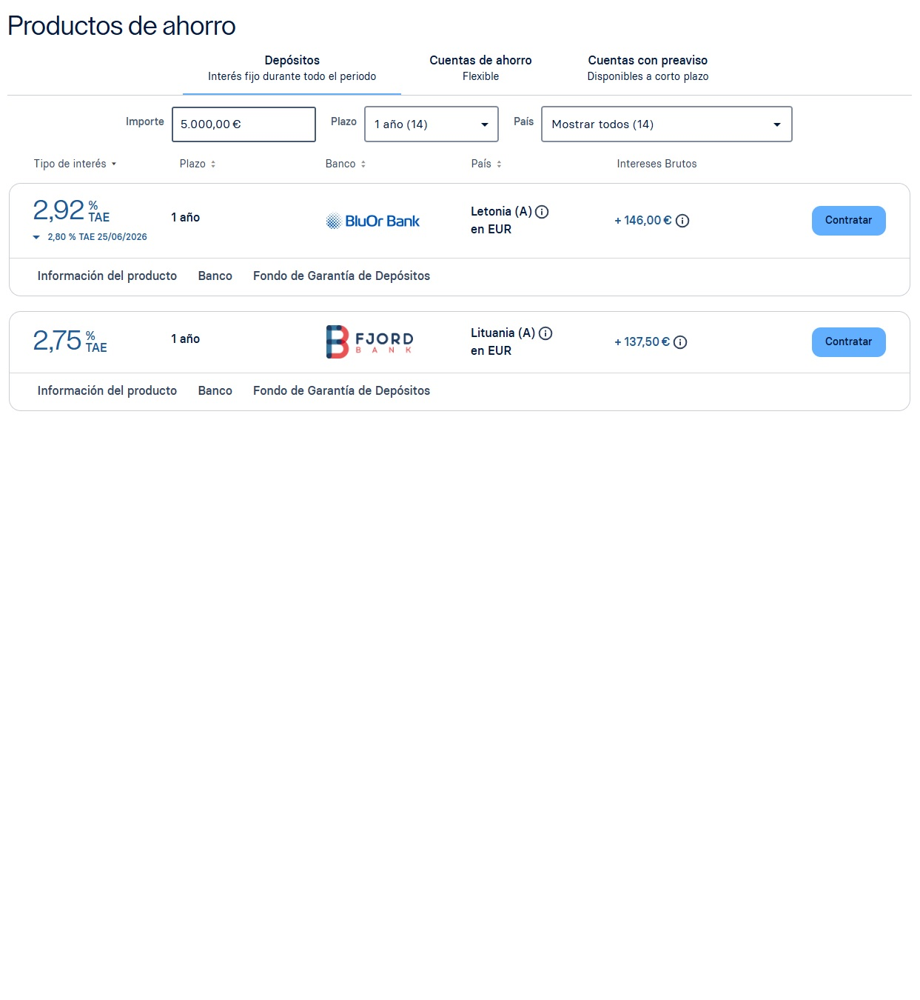

Bueno, ya sabéis que aquí no gustamos mucho de los bancos tradicionales. Nos han tomado el pelo toda la vida y seguirán haciéndolo.
De vez en cuando salen nuevos bancos o cuentas que te remuneran la cuenta de forma extraordinaria unos meses o si eres nuevo cliente, pero con el tiempo vuelven a pagar lo mínimo.
¿Solución? Bancos europeos. Yo me he abierto cuenta en Raisin (www.raisin.es), que es una web donde docenas de bancos europeos se pegan por tu dinero (no como en España, que no habrá más de cinco bancos).
Se la abrí a mi tía el otro día y la del banco (la muy bruja) le empezó a meter miedo con que cuidado para mover el dinero por Europa, que era peligroso. Obviamente, en Europa hay el mismo Fondo de Garantía de Depósitos que hay en España y, si quiebra el banco (hasta 100.000 €), te devuelven el dinero.
La única pega es que si tienes fuera de España depósitos por valor de más de 50.000 € lo tienes que reportar con un Modelo 720. No hay que pagar nada, pero es un rollo tener que andar haciendo papeles. Pero bueno, nadie joven debería tener en depósitos más de 50.000 €.
En esta web puedes configurar los depósitos al gusto: 3 meses, 1 año o incluso cuentas con el dinero disponible en 2 días (ahora pagando un 2%).
Aquí te muestro un ejemplo para 5.000 € y a 1 año de los mejores depósitos que puedes contratar en junio de 2026:

Con este enlace que te paso puedes abrir cuenta y nos dan 50 € a los dos:
Y recuerda, cualquier duda, arriba a la derecha, un clic y hablamos.
24.06.2026, Alonso Orellana
← Volver a artículos